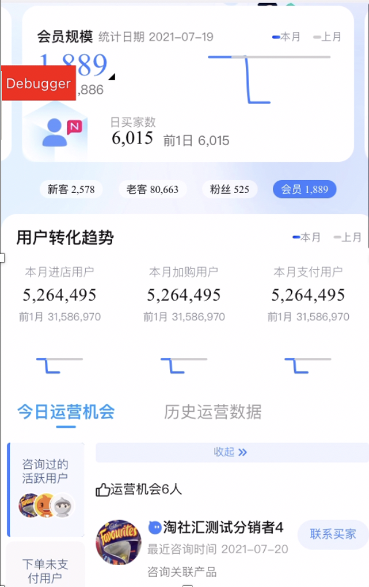
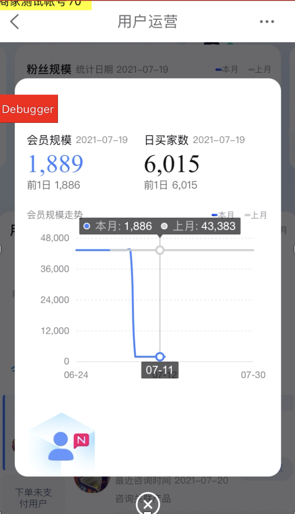
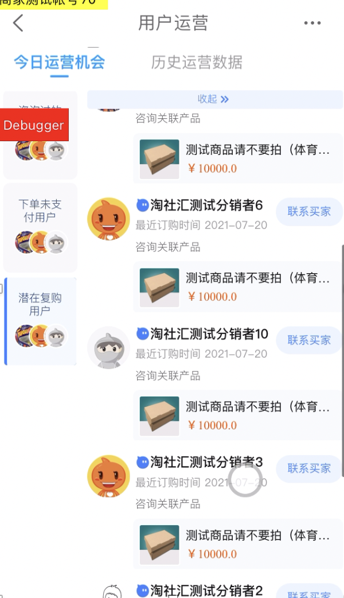
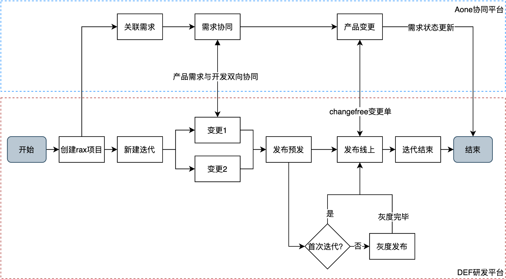

一、用户运营中心移动端：项目背景与难点
背景：当前商家侧业务在移动端的体验比较差，需要对商家侧业务在移动端的能力和体验进行补全和升级，提升商家在移动端使用CRM的体验。 业务挑战：- 图表展示用户数据（bizcharts、swiper.js）
- 唤起千牛客户端聊天页更直接触达消费者（windvane）



二、项目工作
- 移动端开发（Rax开发、客户端调试）
- 数据存储与交互（预发与线上环境调试，数据监控埋点）
- 熟悉研发链路（迭代=>变更=>预发=>线上（灰度））
- 业务功能（Swiper.js, bizcharts, windvane(jsbridge)）
三、项目成果
作为第一个上手线上项目，理解公司实际开发平台及流程
积累移动端开发经验（重点：rax移动端开发与可视化图表经验）
积累产品沟通与合作经历